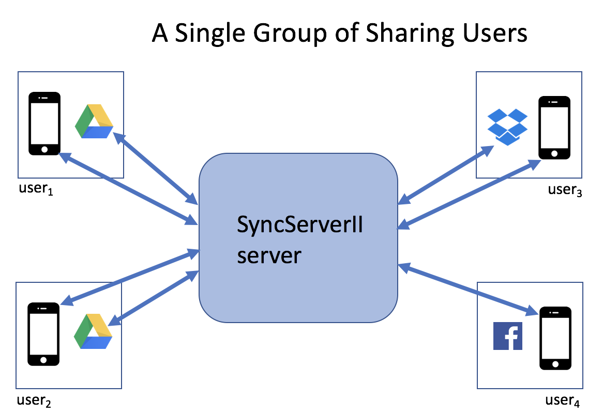
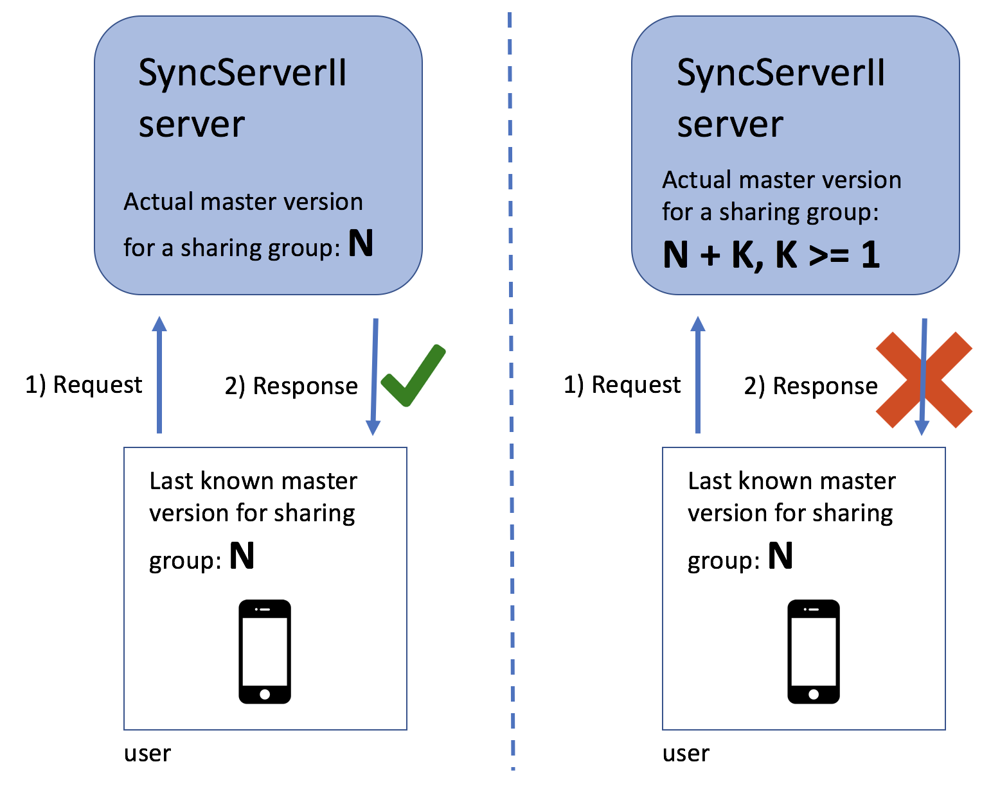
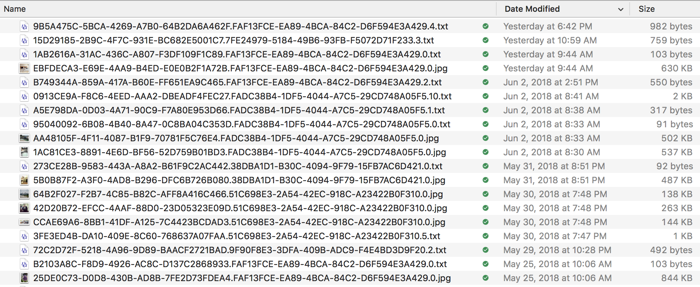

SyncServerII is a framework and server with these main goals:
Current social media: Data is stored on corporate servers; users can lose ownership of data both “physically” and in terms of intellectual property.
If mobile app developer makes use of SyncServer:
Apps sometimes hide their data: For example, you enter your favorite restaurant meals and preferences, and images of those events into an app
If mobile app developer makes use of SyncServer:
Sharing is a key element in the design of SyncServer: It enables groups of users to share files. An initial user starts a sharing group by creating an account on a SyncServer-based app -- using their cloud storage system credentials (e.g., Google Drive or Dropbox). This initial user is termed an owning user because they own the files they upload to the cloud storage system. They can then expand the number of the users in the group by inviting other users to share their files-- these other users are invited with specific permissions: read, write, or admin. Users invited with admin permissions can invite others to the group, and expand the number of users sharing the files in the group. Currently (6/2/18), only the initial user in a group can be the owning user. When other users upload files, they all are uploaded into that owning users cloud storage. This situation is planned to change shortly, however. Other users who join the sharing group with cloud storage credentials will own the files they upload.
The figure above depicts a user group after the change to have multiple owning users per sharing group. Note that all access to cloud storage is routed through the SyncServerII server, and so controls the access that others have to a single users cloud storage. That is, I only grant the sharing group access to specific files in my cloud storage, and only with specific permissions.
Users who have their uploaded files stored in their own cloud storage are termed owning users. Users who sign in with non-cloud storage accounts (e.g., Facebook) are termed sharing users-- any files they upload must be stored in an owning users cloud storage.
Files are the main unit of user data storage in SyncServer. These files are stored in a users cloud storage (e.g., Google Drive, Dropbox), and synchronized with a mobile app.
Files are uniquely identified by UUID's. These are called fileUUID's. Clients are responsible for creating these fileUUID's and giving them to the client interface.
SyncServer stores files in a versioned manner in the sense that when a new file replaces an existing file in cloud storage, it is stored with the successive next version number. Any prior version is deleted immediately beforehand. File versioning is part of a mechanism to make sure apps stay up to date with the latest uploaded data on the server. That is, the most recent version of a file has the contents a client should download. File versioning also helps allow concurrent upload of revised file data. Much of this versioning is concealed beneath the layer of the iOS client library-- but if you look at the program code, or if you look at the file names in cloud storage, you will see versioning.
SyncServer also supports per-file app-specific meta data. This is referred to as appMetaData. This data is stored in the mySQL database used by the server, and for this reason, its use should be minimized in any particular app design. The SharedImages app makes use of appMetaData to store more specialized file type information than recorded in the mime type for the file.
Similar to files, appMetaData is stored in a versioned manner-- when and if the appMetaData is updated for a particular file, the version of the appMetaData gets incremented to the next successive whole number. The purpose of this versioning is to enable client apps to stay up to date with the latest versions of the appMetaData for files.
When an app developer designs a mobile app, it may be convenient to group together collections of files. For example, in the SharedImages app, each pair of image and discussion thread text files are considered to be groups. These file groupings are supported by SyncServer.
File Groups are uniquely identified by UUID's. These are called fileGroupUUID's. Clients are responsible for creating these fileGroupUUID's and giving them to the client interface.
Another key element in the design of SyncServer is synchronization. The goal is that each mobile app should have a consistent snapshot of the data being shared by a group of users. To this end, a type of optimistic synchronization is used. The synchronization is optimistic in that it is generally assumed that simultaneous updates of the data being shared by a group of users will be relatively infrequent.
For the data for a group of users, a single integer called the master version is persistently maintained (in the SyncServer mySQL database). Each time a group of files is uploaded by an app, the master version is incremented. Thus, the master version represents the overall (or master) version of a collection of files (and appMetaData) being shared by a group of users. Every time a client app asks for or sends data to the server, it gives what it thinks is the current master version. If that master version is actually out of date (i.e., doesn't match the master version known to the server), then the server rejects the client request. And then the client must recover from this rejection. Since synchronization, and hence these rejections, should occur only infrequently, this recovery should be infrequent. This rejection recovery occurs purely within the iOS client layer, and is not seen by the mobile app developer (except perhaps for some event reporting).
The left panel of the above figure depicts a successful exchange between the client app and the SyncServerII server-- the client knows the exact value of the current master version for the sharing group. The right panel of the above figure depicts an unsuccessful exchange between the client app and the SyncServerII server-- the client's value for the master version is out of date. Note that in the case of an unsuccessful exchange, the client can still perform certain server requests -- for example, the client can do a FileIndex endpoint request to get (a) the current master version value, and (b) the file meta data (not the appMetaData) for the current collection of files in the file sharing group (e.g., fileUUID's, and file versions.
SyncServerII enables data to be safely shared amongst groups of users. SyncServerII provides privacy and safety in the sense that the files and other information stored in SyncServer will not be searchable by search engines, and only users who you have granted access to your files get access to the specific set of files in the sharing group in SyncServer.
SyncServerII emphasizes privacy and safety over security (e.g., that security can be in the hands of the developer creating the mobile app and deploying the SyncServer server) -- but if a user is happy with the security of their data in a cloud storage service, e.g., Google Drive or Dropbox, they will likely be happy with the security of storage in SyncServer.
SyncServer does persistently store authorization tokens for the cloud storage service for owning users. For example, suppose an owning user is using Google Drive to save their files in a mobile app incorporating SyncServer. Then, SyncServer persistently saves an Oauth2 token for accessing Google Drive for that user in its mySQL database. It is necessary for SyncServer to store these authentication tokens to enable sharing of a users data, when that sharing is authorized. SyncServer never has access to a users username or password on cloud storage services (or other sign-in methods such as Facebook). Sign in is handled using the sign-in mechanism specific to that sign-in method.
An intent of SyncServerII based apps is to allow users to own their data. For example, if an app developer stops maintaining an app a user shouldn't be stranded and lose their data. To this end, file data representations should be chosen where that file data content is available to end-users.
For example, two types of files are used in SharedImages: JPEG image files and text files for discussion threads. The image files are directly usable by users. For example, if an owning user stores their files in Google Drive, then they can open their Google Drive and view the images. The text discussion threads are a little more difficult. They are stored in JSON format, and so will likely be cryptic to an end-user. However, *all* of the discussion thread content is present in these files in plain text.
Similarly, an app developer should make minimal use of the `appMetaData` capabilities of SyncServer. This data is stored in a mySQL database -- and is thus not available to an end-user.
Because an app's files live in end-users cloud storage, there is a risk that users might alter or remove these files. Currently, SyncServerII has two strategies for dealing with this:
A typical pattern of using the iOS client interface is the following:
do {
try SyncServer.session.uploadImmutable(localFile: url1, withAttributes: attr1)
try SyncServer.session.uploadImmutable(localFile: url1, withAttributes: attr2)
} catch {
}
SyncServer.session.sync()
That is, you typically queue up some files for upload (e.g., using uploadImmutable) and then call `sync`. Each time you call the `sync` method of the SyncServer iOS client, the current pending queue of upload items is "closed", and readied for upload. This collection of files is uploaded atomically-- either all of the files make it to the server, or none of the files make it. A suitable use of this capability is to only call `sync` when you have queued uploads for all files in a single file group.
The server, and the cloud storage it references, is generally taken to be the "source of truth" -- or real value of data. Therefore, downloads from the server to the client are prioritized over uploads from the client to the server. This prioritization of downloads has an impact on how we discuss conflicts -- we talk about conflicts as stemming from downloads, though they involve an interaction between changes on the server and changes on the client.
The left and right panels of the above figure illustrate the two main categories of conflicts: Content download conflicts and download deletion conflicts.
Consider the SharedImages app, and suppose that user Chris makes a discussion thread comment, and the app uploads that comment. Next, without first refreshing, another user, Dany, in the same group comments on the same image. This is now a conflict situation: The comment thread (a file) referenced by the server, as modified by Chris, is different than the file that Dany's app is uploading. Dealing with these conflicts is known as conflict resolution. Similarly, a conflict can also occur if Chris deletes a file (say, an image and discussion thread in SharedImages), uploads that change to the server, and Dany, without first refreshing, makes a modification to the discussion thread associated with that image.
The SyncServer client leaves the details of conflict resolution decisions to the app developer, but provides some mechanisms to assist in this process. One reason that the details of conflict resolution are left to the app developer is because app developers can choose representations, in some cases, to make conflict resolution easier. For example, in the first conflict situation above, between two changes in a discussion thread file, SharedImages handles this relatively easily by disallowing individual comments to be modified, by giving each discussion comment a unique identifier, and by putting timestamps onto each comment. These app-specific decisions enable two conflicting versions of the same discussion thread file to be easily merged, and thus conflict resolution in this case is simplified.
The SyncServer client provides mechanisms to assist in dealing with conflicts in the following manner. First, conflicts are categorized into content download and download deletion conflicts. Content download conflicts are conflicts between a modified file and/or appMetaData being downloaded from the server, and the same file and/or appMetaData, modified (or deleted) by the local user and being uploaded. When these conflicts occur, the following SyncServer delegate method is called:
func syncServerMustResolveContentDownloadConflict(
_ downloadContent: ServerContentType,
downloadedContentAttributes: SyncAttributes,
uploadConflict: SyncServerConflict)
The above delegate method enables client apps to choose how they want to deal with the content download conflict. For example, a client app might choose to always prioritize downloads from the server and ignore conflicting uploads.
Download deletion conflicts are between a file that was deleted on the server, and the same file and/or appMetaData having been modified or deleted locally and being uploaded. When these conflicts occur, the following SyncServer delegate method is called:
func syncServerMustResolveDownloadDeletionConflicts(
conflicts:[DownloadDeletionConflict])
The above delegate method enables client apps to choose how they want to deal with the download deletion conflicts. For example, a client app might choose to always prioritize download deletions from the server and ignore conflicting uploads.
See also https://crspybits.github.io/iOS-Client-Docs/Conflict%20Resolution.html and https://crspybits.github.io/iOS-Client-Docs/Protocols/SyncServerDelegate.html.
E.g., suppose you have two apps, each with different Apple iOS bundle id's-- then you'll need to run two different SyncServers.
Files are uploaded from clients to cloud storage with the naming convention:
fileUUID.deviceUUID.fileVersion.FileExtension
A deviceUUID is an identifier assigned by the SyncServer iOS client library to the particular device to identify it to the server. The fileVersion is an integer corresponding to the file version as discussed above. We do not use just the fileUUID to name the file in the cloud service because the server does not hold a lock across multiple file uploads, and we need to make sure that we don't have a conflict when two or more devices attempt to concurrently upload the same file. FileExtension's correspond directly to the mime type of a file used when uploading using the client interface.
For example, here is an example of files stored in a Google Drive account by the SharedImages app:
In the above figure, you can notice that all of the image (.jpg) file are at version 0-- SharedImages doesn't generally let you modify an image once uploaded. You can also notice that some of the .txt files (used for discussion threads) are at versions > 0-- this is because various users of the SharedImages app contribute to the discussion threads, and upload different versions of discussion thread files corresponding to those changes.
Each separate mobile app needs its own server. That is, for iOS, each app with a separate bundle id needs its own server.
I have gone through a few incarnations of methods for installing the server, each of them on AWS. Currently, I am using a Docker image, and also use AWS Elastic Beanstalk. Previously, I was building the server directly on an AWS EC2 instance.
The two basic parts of my current deployment method are described below.
Docker is now central to my testing and deployment process for the server. For testing, I use the same Docker image that I use for building.
On my system, the following command launches that Docker image:
docker run --rm -i -t -v /Users/chris/Desktop/Apps/:/root/Apps crspybits/swift-ubuntu:4.0.0
And, of course, the path `/Users/chris/Desktop/Apps/` is specific to my system.
And running under that Docker image, this builds the server:
swift build -Xswiftc -DDEBUG -Xswiftc -DSERVER
For runtime, I use this Docker base-image and I run the script to create a Docker image for a specific release of the SyncServerII server code. Those release builds of the server Docker images live at hub.docker.
I use AWS's Elastic Beanstalk for reasons including:
My deployment process to the AWS Elastic Beanstalk takes several steps, some of them manual.
When the server starts, it reads configuration information from a JSON file. The following details the format of that configuration file.
{
"mySQL.host": "URL-for-mySQL-server",
"mySQL.user": "usernameForMySQL",
"mySQL.password": "passwordForMySQL",
"mySQL.database": "mySQL-database-name",
"port": "8080",
"allowedSignInTypes.Facebook": "true",
"allowedSignInTypes.Google": "true",
"allowedSignInTypes.Dropbox": "true",
"ssl.selfSigning": "false",
"GoogleServerClientId": "Get this when you create your Google app",
"GoogleServerSecret": "as above",
"FacebookClientId" : "Get this when you create your Facebook app",
"FacebookClientSecret": "as above",
"owningUserAccountCreation.initialFileName": "IMPORTANT_README.txt",
"owningUserAccountCreation.initialFileContents": "IMPORTANT: The files placed in this directory should not be changed in any way. They were created by the EXAMPLE app. If they are changed, that can cause the EXAMPLE app to crash or behave unpredictably. Of course, if you want to stop using EXAMPLE, these are your files, and you are fully able to use them as you wish."
}
When a new owning user account is created (i.e., one with cloud storage), a single non-shareable file is first created. That file has a name given by owningUserAccountCreation.initialFileName and contents given by owningUserAccountCreation.initialFileContents. The intent is that this file serves as a warning to users to not modify the files used by the app.
The best instructions for setting up a new iOS app are likely found by looking over the SharedImages app, but some details are also given below.
The example app in the iOS client repo can also provide information on setting up your iOS app.
# Some pods used by SyncServer haven't yet been released to cocoapods.org, so the following is needed.
source 'https://github.com/crspybits/Specs.git'
source 'https://github.com/CocoaPods/Specs.git'
use_frameworks!
target 'YourApp' do
# The iOS client.
pod 'SyncServer'
# Only needed if you are allowing Facebook users to share.
pod 'SyncServer/Facebook'
# Only needed if you are using Dropbox for cloud storage
pod 'SyncServer/Dropbox'
# Only needed if you are using Google Drive for cloud storage
pod 'SyncServer/Google'
target 'YourAppTests' do
inherit! :search_paths
end
end
import SyncServer
let googleSignIn = GoogleSyncServerSignIn(serverClientId: serverClientId, appClientId: appClientId) SignInManager.session.addSignIn(googleSignIn, launchOptions: options)If you are also using Dropbox, you'll need:
let dropboxSignIn = DropboxSyncServerSignIn(appKey: dropboxAppKey) SignInManager.session.addSignIn(dropboxSignIn, launchOptions: options)If you are also using Facebook sign-in, you'll need:
let facebookSignIn = FacebookSyncServerSignIn() SignInManager.session.addSignIn(facebookSignIn, launchOptions: options)
SyncServer.session.appLaunchSetup(withServerURL: serverURL, cloudFolderName:cloudFolderName)
func application(_ app: UIApplication, open url: URL, options: [UIApplicationOpenURLOptionsKey : Any] = [:]) -> Bool {
return SignInManager.session.application(app, open: url, options: options) ||
SharingInvitation.session.application(app, open: url, options: options)
}
func application(_ application: UIApplication, handleEventsForBackgroundURLSession identifier: String, completionHandler: @escaping () -> Void) {
SyncServer.session.application(application, handleEventsForBackgroundURLSession: identifier, completionHandler: completionHandler)
}
// For the GoogleSyncServerSignIn, the delegate in this params argument must a view controller abiding by GoogleSignInUIProtocol let googleSignInButton = googleSignIn.setupSignInButton(params: ["delegate": self]) googleSignIn.delegate = self // abiding by GenericSignInDelegate // If you are using Facebook sign-in: let facebookSignInButton = facebookSignIn.setupSignInButton(params:nil) // Just to balance out the lengths of the sign-in buttons-- the Google button is shorter. facebookSignInButton.frameWidth = googleSignInButton.frameWidth facebookSignIn.delegate = self // If you are using Dropbox sign-in: let dropboxSignInButton = dropboxSignIn.setupSignInButton(params: ["viewController": self]) dropboxSignInButton.frameSize = CGSize(width: googleSignInButton.frameWidth, height: googleSignInButton.frameHeight * 0.75) dropboxSignIn.delegate = self
let signIn:SignIn = SignIn.createFromXib()! // and add this SignIn view into an appropriate view controller in your UI.The SignIn view uses the SyncServer SignInManager to determine which sign-in buttons to display. The SharedImages app uses the SignIn view, so see that for additional code details.
You need to generate a configuration file-- this will typically be named: `GoogleService-Info.plist`, and add that file to your Xcode project. Amongst other information, this .plist file contains the Google `CLIENT_ID` for your iOS app.